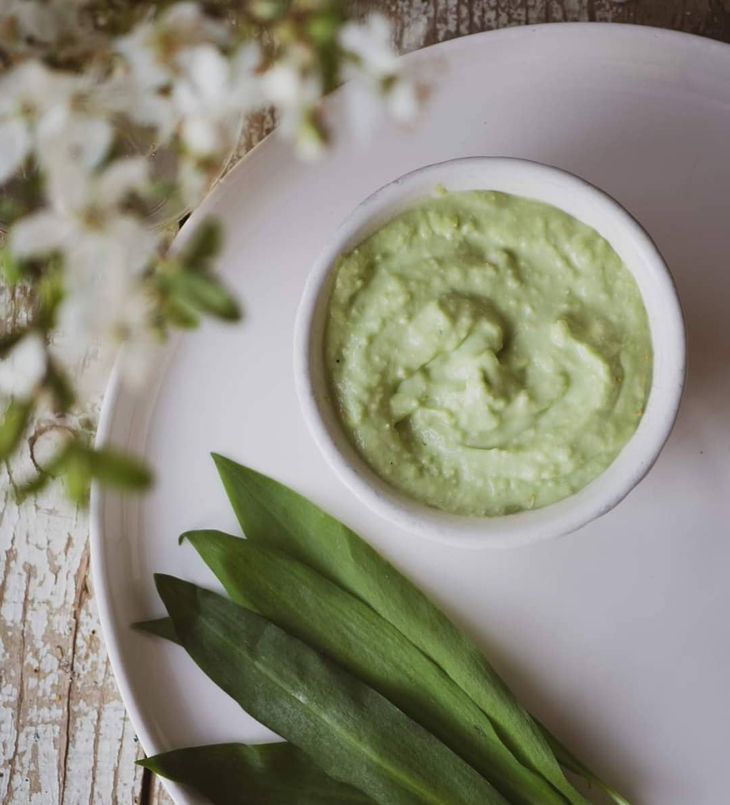

Medvedi cesnak sa uz prediera cez minulorocne opadane listy a vdaka nemu a snezienkam sa nas podunajsky lesik zacina krasne zelenat.
Uz som ho bola zbierat parkrat a okrem toho, ze som si ho dala na maslovy chlebik vlastnej vyroby, spravila som si na skusku jeden poharik pesta na cestoviny.
.
.
Ale - urcite este pride na rad moja oblubena natierka z medvedieho cesnaku a camembertu.
A recept pre vas, ak by ste chceli vyskusat:
CAMEMBERTOVA NATIERKA S MEDVEDIM CESNAKOM:
100 g vyzreteho camembertu alebo syru Brie
100 g cerstveho syra (Philadelphia a pod.)
50 g makkeho masla
20 listkov medvedieho cesnaku
.
Cesnak obarime vriacou vodou, prepasirujeme ho cez jemne sitko a odchytime zelenu stavicku. Tu zmiesame so syrmi a maslom a ponornym mixerom ich vymixujeme do kasovej konzistencie. Dochutime solou a ciernym korenim, ak sa nam ziada.
.
.